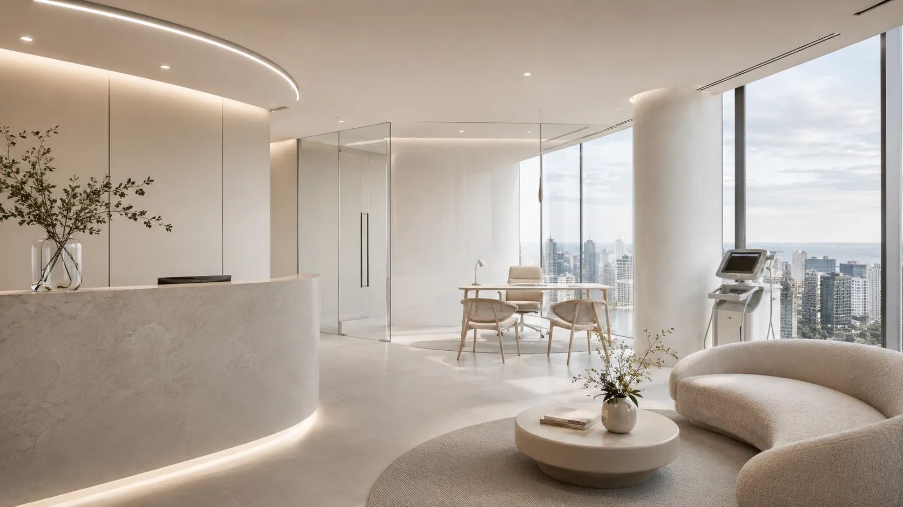
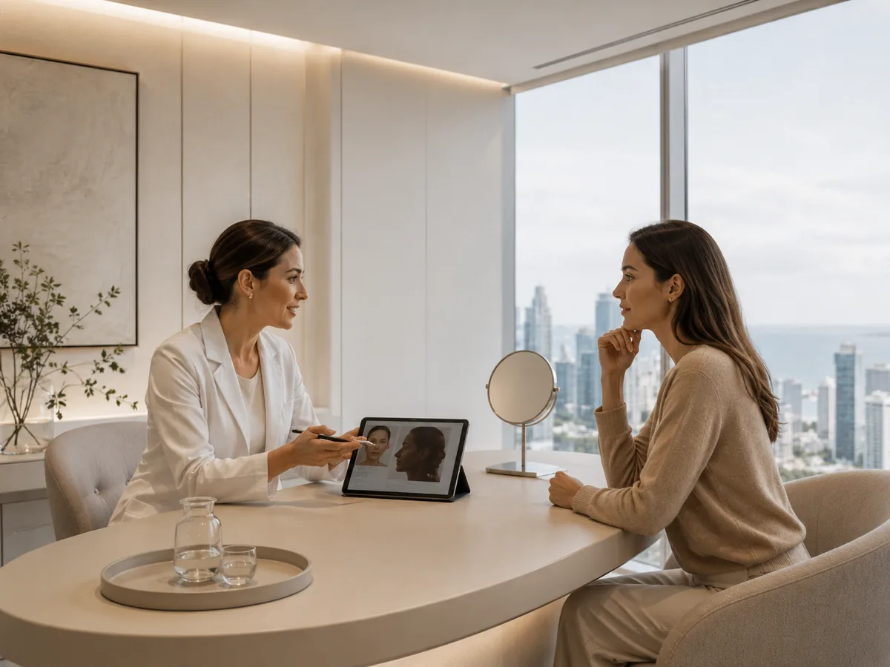
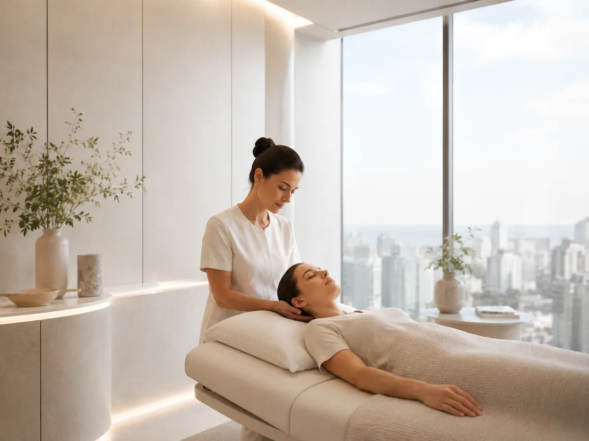

01
Medicina estética facial
El rostro se entiende como un conjunto. La evaluación ayuda a definir prioridades sin perder expresión ni naturalidad.
Conocer másMEDICINA ESTÉTICA · POCITOS, MONTEVIDEO
Primero entender qué buscás. Después, elegir con criterio.

Primero entender. Después decidir.

02 · ESCUCHA Y CRITERIOFILOSOFÍA PISO 22
Antes de hablar de tratamientos, hay algo más importante: entender qué buscás y qué tiene sentido para vos.
La medicina estética no debería empezar por una tendencia. Debería empezar por una evaluación, una conversación clara y decisiones que respeten tu naturalidad.
TRATAMIENTOS
Estas son algunas de las áreas que podés conversar durante una consulta.
El rostro se entiende como un conjunto. La evaluación ayuda a definir prioridades sin perder expresión ni naturalidad.
Conocer más
Opciones enfocadas en la calidad de la piel y en acompañar sus cambios con el tiempo.
Conocer más
Cada caso pide una planificación distinta. La consulta permite valorar si tiene sentido incorporarlo y con qué objetivo.
Conocer más
Una alternativa que se valora caso a caso, según tus objetivos y la indicación profesional.
Conocer más
Un plan que se define según las zonas a tratar y las necesidades de cada persona.
Conocer más
Porque sentirse bien también forma parte del cuidado. Un espacio para sumar bienestar a una rutina pensada a largo plazo.
Conocer másCRITERIO MÉDICO
Evaluar antes de indicar
Formación y actualización constante
Naturalidad por encima de tendencias
Seguimiento en cada etapa
Decisiones explicadas con claridad
PROGRAMAS DE CUIDADO
Hay objetivos que tienen más sentido cuando se piensan como un proceso y no como visitas aisladas.
Conocer modalidadesEQUIPO
La versión final presentará aquí a cada profesional, su especialidad y sus credenciales verificadas.
Especialidad · credenciales verificadas
Especialidad · credenciales verificadas
Especialidad · credenciales verificadas
RESEÑAS
La versión final puede integrar aquí opiniones reales y verificadas de Google, sin inventar testimonios ni resultados.
Contenido pendiente de integrar
Contenido pendiente de integrar
PREGUNTAS FRECUENTES
No tenés que llegar con la respuesta. La consulta sirve justamente para hablar de lo que buscás y valorar qué opciones tiene sentido considerar en tu caso.
Depende del tratamiento. En consulta pueden indicarte qué instancia previa corresponde en tu caso y resolver tus dudas antes de avanzar.
En la versión final vas a poder hacerlo desde el canal de agenda que Piso 22 prefiera, directamente desde esta página.
En Gabriel Pereira 3173, Pocitos, Montevideo.
PRIMER PASO
El primer paso es conversar sobre lo que querés lograr.
Agendar consulta